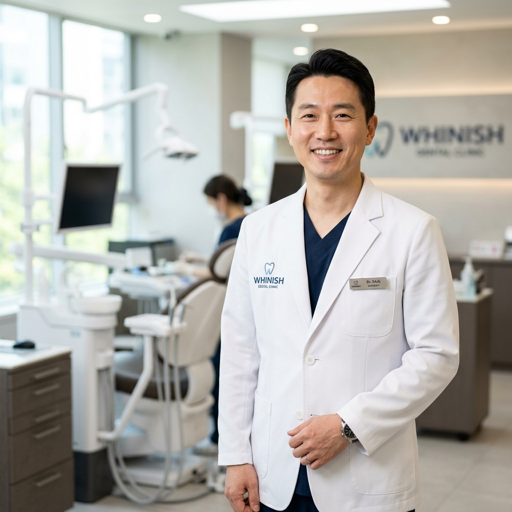
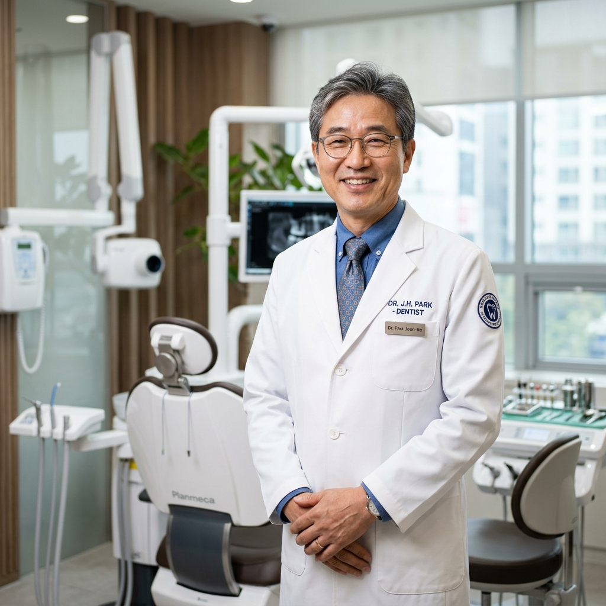
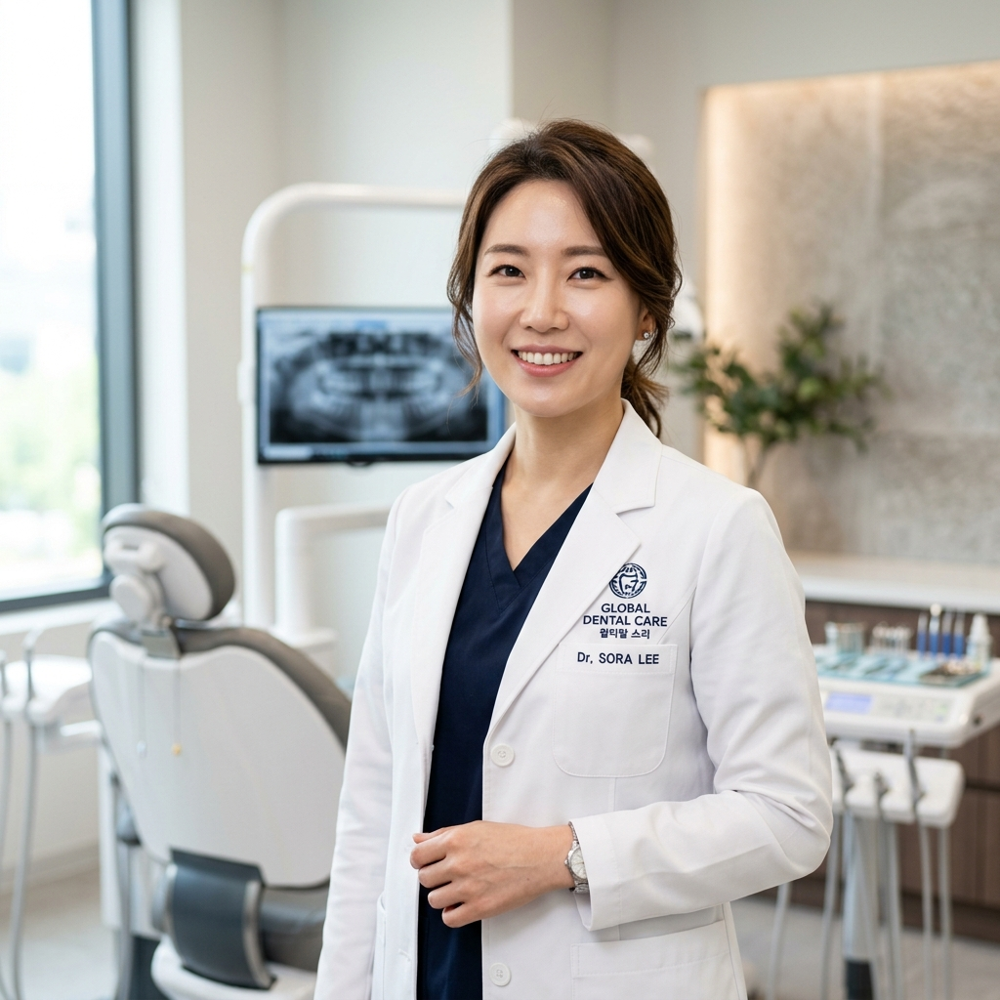

Medical Specialists
Whinish 의료진
30년 전통의 기술력과 초정밀 솔루션이 만났습니다.
분야별 박사급 의료진이 당신의 미소를 직접 책임집니다.

Representive Director
이봉진 대표원장
연세대학교 치과대학 졸업 | 임플란트·심미보철 전문가- 대한구강악안면임플란트학회 정회원
- 대한치과이식임플란트학회 정회원
- 대한턱관절교합학회 정회원
- Whinish 초정밀 접착 솔루션 마스터

Hospital Director
김준헌 병원장
치의학 박사 | 서울대학교 치과대학 | 교정 전문의- 단국대학교 치의학 박사
- 스웨덴 Goteborg 대학교 Vasteras 구강외과 방문의
- 전) 치과교정학 외래교수
- 유럽/미국 임플란트 학회 정회원

Director
박선혜 원장
치주과 전문의 | 치의학 박사 과정 | 우수보철치과의- 대한치과보철학회 인증 우수보철치과의
- 심미수복 및 접착학 전문가
- Whinish 라이프사이클 예방 관리팀장
- 대한치주과학회 정회원